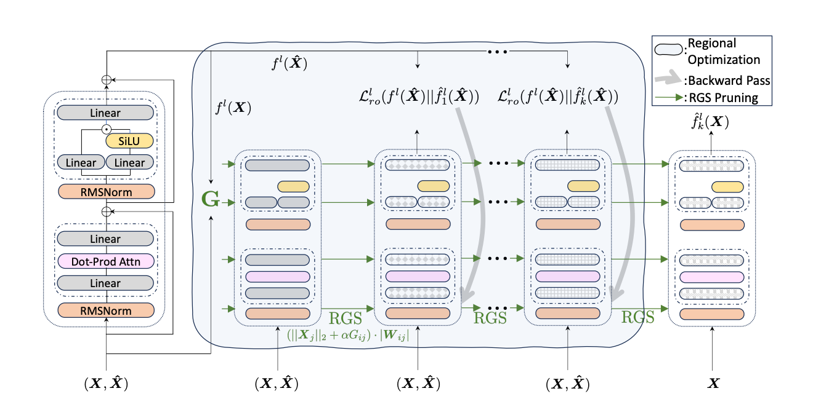

Wanda++: Pruning Large Language Models via Regional Gradients
Yifan Yangנ,
Kai Zhen♣†,
Bhavana Ganesh♣,
Aram Galstyan♣,
Goeric Huybrechts♣,
Markus Müller♣,
Jonas M. Kübler♣,
Rupak Vignesh Swaminathan♣,
Athanasios Mouchtaris♣,
Sravan Babu Bodapati♣,
Nathan Susanj♣,
Zheng Zhang◊,
Jack FitzGerald♣,
Abhishek Kumar♣
◊University of California, Santa Barbara
♣Amazon AGI
†Equal Contributions
Wanda++ can be applied after post-training architectural changes (e.g., pruning, dense-to-MoE) to quickly mitigate degradation before costly recovery training.
Abstract
Large Language Models (LLMs) pruning
seeks to remove unimportant weights for inference speedup with minimal accuracy impact. However, existing methods often suffer from accuracy degradation without fullmodel sparsity-aware fine-tuning. This paper
presents Wanda++, a novel pruning framework
that outperforms the state-of-the-art methods
by utilizing decoder-block-level regional gradients. Specifically, Wanda++ improves the
pruning score with regional gradients for the
first time and proposes an efficient regional optimization method to minimize pruning-induced
output discrepancies between the dense and
sparse decoder output. Notably, Wanda++ improves perplexity by up to 32% over Wanda
in the language modeling task and generalizes
effectively to downstream tasks. Moreover, despite updating weights with regional optimization, Wanda++ remains orthogonal to sparsityaware fine-tuning, further reducing perplexity
with LoRA in great extend. Our approach is
lightweight, pruning a 7B LLaMA model in
under 10 minutes on a single H100 GPU.
Wanda++ Pipeline
In this paper, we demonstrate how Wanda++ can be used to reduce performance degradation with the use of decoder-level regional gradients from model pruning. Wanda++ prunes the model by iteratively applying our regional gradient score (RGS) and a regional optimization (RO) method.

Wikitext Perplexity and Downstream Tasks Performance
| Method |
Sparsity |
LLaMA-1 |
OpenLLaMA |
LLaMA-3.1 |
| 7B | 13B | 30B | 65B |
3B | 7B | 70B | 8B |
| Baseline | - | 5.68 | 5.09 | 4.77 | 3.56 | 7.27 | 6.49 | 4.30 | 6.39 |
| SparseGPT* | 0.5 | 7.22 | 6.21 | 5.31 | 4.57 | 10.41 | 8.57 | - | - |
| Wanda* | 7.26 | 6.15 | 5.24 | 4.57 | 12.37 | 9.15 | 5.25 | 9.99 |
| GBLM | 7.15 | 6.11 | 5.18 | - | 10.75 | 8.49 | - | 9.90 |
| Wanda++ RO | 7.07 | 6.08 | 5.12 | 4.43 | 9.86 | 8.27 | 5.14 | 9.34 |
| Wanda++ RGS | 7.18 | 6.12 | 5.15 | 4.48 | 10.78 | 8.50 | 5.19 | 9.92 |
| Wanda++ | 7.02 (-3%) | 6.00 (-2%) | 5.10 (-3%) | 4.43 (-3%) | 9.25 (-25%) | 7.82 (-15%) | 5.11 (-3%) | 9.22 (-7%) |
| SparseGPT* | 2:4 | 11.00 | 9.11 | 7.16 | 6.28 | 15.91 | 11.62 | - | - |
| Wanda* | 11.53 | 9.58 | 6.90 | 6.25 | 28.04 | 15.35 | 6.47 | 24.83 |
| GBLM | 11.33 | 9.16 | 6.87 | - | 24.75 | 13.19 | - | 24.34 |
| Wanda++ RO | 10.78 | 7.89 | 6.51 | 5.86 | 19.41 | 11.69 | 6.37 | 19.43 |
| Wanda++ RGS | 11.46 | 9.44 | 6.93 | 6.23 | 24.77 | 13.27 | 6.40 | 24.54 |
| Wanda++ | 9.43 (-19%) | 7.75 (-20%) | 6.39 (-7%) | 5.59 (-11%) | 19.03 (-32%) | 11.30 (-26%) | 6.35 (-2%) | 18.32 (-26%) |
| SparseGPT* | 4:8 | 8.61 | 7.40 | 6.17 | 5.38 | 12.20 | 9.79 | - | - |
| Wanda* | 8.57 | 7.40 | 5.97 | 5.30 | 16.83 | 11.38 | 5.73 | 14.63 |
| GBLM | 8.48 | 7.26 | 5.89 | - | 14.86 | 10.38 | - | 14.29 |
| Wanda++ RO | 8.34 | 7.18 | 5.73 | 5.11 | 13.10 | 9.52 | 5.67 | 12.88 |
| Wanda++ RGS | 8.58 | 7.33 | 5.90 | 5.17 | 14.92 | 10.42 | 5.70 | 14.32 |
| Wanda++ | 7.88 (-8%) | 6.75 (-9%) | 5.65 (-5%) | 5.07 (-4%) | 12.54 (-25%) | 9.42 (-17%) | 5.65 (-1%) | 12.55 (-14%) |
Table 1: Wikitext perplexity comparison on LLaMA-1, OpenLLaMA, and LLaMA-3.1 model families. * indicates results from either the previous papers. - means results are not available due to OOM or source code limitations. Bold numbers highlight ≥5% relative improvements over Wanda.
| Method |
Wic |
Mrpc |
Hellaswag |
Arc_easy |
Arc_challenge |
Winogrande |
BoolQ |
RTE |
MMLU |
| Baseline |
49.84 | 69.12 | 56.96 | 75.29 | 41.80 | 70.00 | 75.02 | 66.43 | 35.10 |
| Wanda |
48.75 | 46.81 | 41.66 | 59.34 | 27.47 | 61.96 | 69.60 | 49.82 | 25.85 |
| GBLM |
49.32 | 65.31 | 41.80 | 61.43 | 30.45 | 63.24 | 71.20 | 57.43 | 26.34 |
| Wanda++ RGS |
49.37 (1%) | 64.46 (38%) | 41.43 (-1%) | 62.42 (5%) | 31.06 (13%) |
62.83 (1%) | 67.95 (-2%) | 58.48 (17%) | 26.40 (-2%) |
| Wanda++ |
50.00 (2%) | 68.38 (46%) | 45.31 (8%) | 63.72 (7%) | 29.27 (6%) |
65.04 (4%) | 67.80 (-2%) | 62.09 (24%) | 27.52 (6%) |
Table 2: Accuracy (%) from LLaMA-1 7B under 2:4 sparsity in zero-shot setting. Bold values indicate best performance or ≥5% relative improvement over Wanda.
Combined with Recovery Training
We show the Wanda++ can be combined with further recovery training to improve the performance of the pruned model. In this case, we use LoRA to recover the performance of the pruned model and show Wanda++ w. LoRA perform better than Wanda w. LoRA . However, other post-training methods like DPO, GRPO can also be combined for the recovery training.
| Methods |
Dense |
Pruned Model |
After LoRA-tuned |
| Wanda |
5.68 |
11.59 |
8.23 (-29%) |
| Wanda++ |
5.68 |
9.43 |
6.88 (-27%) |
Table 3: Perplexity comparison on Wikitext with LoRA. All experiments are conducted on LLaMA-7B with 2:4 sparsity.
BibTeX
@article{yang2025wanda++,
title={Wanda++: Pruning large language models via regional gradients},
author={Yang, Yifan and Zhen, Kai and Ganesh, Bhavana and Galstyan, Aram and Huybrechts, Goeric and M{\"u}ller, Markus and K{\"u}bler, Jonas M and Swaminathan, Rupak Vignesh and Mouchtaris, Athanasios and Bodapati, Sravan Babu and others},
journal={arXiv preprint arXiv:2503.04992},
year={2025}
}